>Educational data mining e Knowledge Tracing
Engenharia da Computação
Análise do aprendizado de programação utilizando mineração de dados educacionais
Erick Miranda Viana
Leonardo Kuntz Oliveira
Victor Santos Borba
Orientadora: Profa. Ma. Talita dos Reis Lopes Berbel
Agenda
- >Introdução
- >Fundamentos
- >Metodologia
- >Dados
- >Modelos
- >Conceitos
- >Ferramenta
- >Demonstração
- >Considerações finais
>introdução
O ensino de programação tem se mostrado complexo, com altos índices de reprovação e desistência nas disciplinas introdutórias de cursos de tecnologia.
Martins, Marin e Alves (2024) trazem uma revisão sistemática da literatura, cujo objetivo é identificar os principais desafios enfrentados por estudantes durante a aprendizagem de programação de computadores.
Em nove semestres de um curso de Engenharia de Computação, a reprovação nas disciplinas introdutórias de programação ficou entre 18,51% e 21,98% (Luz et al., 2026).
Nosso trabalho busca auxiliar na elaboração de métodos que auxiliem o processo de ensino e aprendizagem de programação, promovendo melhores resultados acadêmicos.
>mineração de dados educacionais
A mineração de dados educacionais (Educational Data Mining, EDM) combina mineração de dados, estatística e aprendizado de máquina (Kalita et al., 2025).
Os dados educacionais podem ser utilizados para identificar padrões de aprendizagem, prever desempenho e apoiar decisões pedagógicas.
No ensino de programação, cada interação do estudante em ambientes educacionais digitais gera informações valiosas, como submissões de código, erros e tentativas de resolução.
>áreas da edm
A EDM e a learning analytics (LA) ocupam a interseção entre ciência da computação, educação e estatística.
Figura 1 – Áreas relacionadas à EDM e à LA
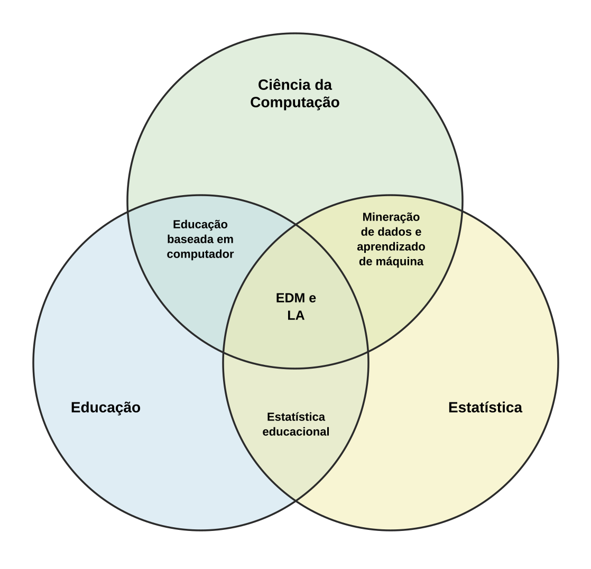
Fonte: adaptado de Srinivasa e Kurni (2021).
Nessa interseção, o trabalho reúne análise de código, knowledge tracing e componentes de conhecimento.
>knowledge tracing
O objetivo do knowledge tracing é acompanhar a evolução do conhecimento do estudante ao longo do tempo (Abdelrahman; Wang; Nunes, 2023).
Em termos práticos, dado o histórico de interações de um estudante, o modelo tenta prever se ele irá acertar ou errar a próxima atividade.
Para realizar essa previsão, os modelos utilizam os chamados knowledge components, ou KCs, que representam habilidades ou conhecimentos necessários para resolver um problema.
No contexto de programação, exemplos de KCs podem ser estruturas de repetição, condicionais e manipulação de vetores.
>problema e objetivos
Hipótese de pesquisa
A análise do aprendizado de programação pode ser melhorada ou facilitada utilizando técnicas de mineração de dados educacionais?
Objetivo geral
Identificar padrões de aprendizagem em programação pela mineração dos códigos submetidos, apontando pontos fortes e fracos por conceito.
Objetivos específicos
- Comparar BKT, DKT e Code-DKT e selecionar o modelo pela AUC.
- Extrair automaticamente, com um grande modelo de linguagem, KCs interpretáveis das soluções corretas.
- Desenvolver uma ferramenta web que apresente ao docente o domínio estimado por conceito.
- Analisar os resultados na ferramenta com dados de uma base pública.
>metodologia
Pesquisa aplicada, quantitativa e exploratória. A etapa analítica é experimental, e a ferramenta é um desenvolvimento tecnológico com avaliação técnica.
O trabalho segue o processo de EDM em quatro fases (Zorić, 2020):
Figura 2 – Etapas do processo de mineração de dados educacionais
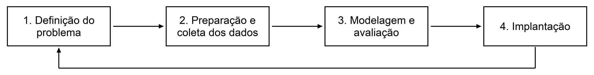
Fonte: elaborado pelos autores (2026).
A preparação dos dados e a modelagem formam a etapa analítica, sobre a base CSEDM. A implantação é a ferramenta.
>o dataset csedm
Nosso dataset é o CSEDM, coletado de uma disciplina introdutória de programação em Java, no primeiro semestre de 2019, e divulgado no 2º CSEDM Data Challenge (CSEDM Workshop, 2021).
Armazenado em ProgSnap2 (Price et al., 2020), formato que registra cada evento de programação do estudante, preservando o histórico completo das tentativas em cada problema.
Cada evento traz estudante (SubjectID), atividade (AssignmentID), problema (ProblemID), tipo (EventType), pontuação (Score), horário (ServerTimestamp) e estado do código (CodeStateID).
413 estudantes, 5 atividades com 10 problemas cada e 201.570 eventos.
>análise e preparação dos dados
- >A tabela abaixo traz uma visão geral dos dados da base, divididos por atividade.
Tabela 1 – Dados da base CSEDM por atividade
| A1 | A2 | A3 | A4 | A5 | |
|---|---|---|---|---|---|
| Estudantes | 386 | 340 | 361 | 315 | 306 |
| Submissões do programa | 14.614 | 15.879 | 17.191 | 12.402 | 9.541 |
| Submissões corretas (%) | 26,2 | 20,1 | 20,3 | 24,7 | 30,6 |
| Submissões incorretas (%) | 23,6 | 40,5 | 39,3 | 37,1 | 40,2 |
| Erros de compilação (%) | 50,2 | 39,4 | 40,4 | 38,1 | 29,2 |
| Nota final média | 0,62 | 0,64 | 0,64 | 0,66 | 0,68 |
Fonte: elaborado pelos autores (2026).
- >Cada execução do programa é uma tentativa submetida pelo aluno, rotulada com 1, caso esteja correta, e 0 para incorretas. No total das cinco atividades, 23,68% das execuções são corretas, a mesma proporção reportada por Shi et al. (2022).
- >Em cada atividade, estudantes são divididos em 80% para treino e 20% para teste, com a mesma partição para os três modelos, um modelo por atividade, com o próprio problema como KC.
- >Sequências de execuções com mais de 50 tentativas mantêm as 50 mais recentes.
>seleção do modelo
Comparamos três modelos de knowledge tracing que marcam a evolução da área.
Figura 3 – Linha do tempo dos modelos comparados
Corbett e Anderson
BKT, probabilidade bayesiana por KC
Piech et al.
DKT, rede LSTM sobre acertos e erros
Shi et al.
Code-DKT, o DKT com o código de cada tentativa
Fonte: elaborado pelos autores (2026).
Os três usam a mesma base e a mesma partição, e são comparados pela AUC na primeira tentativa de cada estudante em cada problema.
Tabela 2 – AUC de primeira tentativa por atividade
| Atividade | BKT (%) | DKT (%) | Code-DKT (%) |
|---|---|---|---|
| A1 | 62,43 ± 0,00 | 70,74 ± 3,59 | 75,42 ± 1,13 |
| A2 | 62,18 ± 0,78 | 77,33 ± 2,73 | 78,32 ± 0,76 |
| A3 | 59,57 ± 0,60 | 81,43 ± 4,51 | 85,08 ± 0,79 |
| A4 | 53,18 ± 0,26 | 73,07 ± 4,34 | 75,56 ± 0,84 |
| A5 | 59,61 ± 0,49 | 83,13 ± 2,77 | 85,12 ± 0,52 |
| Média | 59,39 | 77,14 | 79,90 |
| Desvio padrão médio | 0,43 | 3,59 | 0,81 |
Fonte: elaborado pelos autores (2026).
Na AUC geral, o padrão se repete: 63,11% no BKT, 71,79% no DKT e 74,31% no Code-DKT.
>sobre o code-dkt
Figura 4 – O Code-DKT implementado na ferramenta
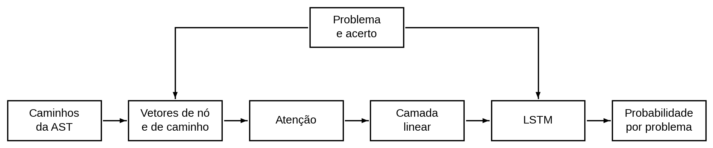
Fonte: elaborado pelos autores (2026).
- >A cada tentativa, o código Java vira uma árvore de sintaxe abstrata (abstract syntax tree, AST) com o
javalang, e os caminhos da árvore viram vetores de nó e de caminho. - >A atenção pondera os caminhos e realça os mais informativos, e a camada linear gera o vetor do código.
- >O vetor do código entra na LSTM (long short-term memory) junto com o problema e o acerto, e a saída é a probabilidade de acerto em cada problema.
- >Duas tentativas incorretas com códigos diferentes passam a ter representações diferentes.
>code-dkt × shi et al.
Comparamos o Code-DKT implementado com os valores reportados por Shi et al. (2022), na mesma base.
Tabela 3 – AUC geral do Code-DKT em comparação com Shi et al. (2022)
| A1 | A2 | A3 | A4 | A5 | Média | |
|---|---|---|---|---|---|---|
| Shi et al. (2022) (%) | 74,31 | 76,56 | 80,40 | 72,75 | 79,14 | 76,63 |
| Este trabalho (%) | 71,42 | 73,53 | 78,21 | 72,17 | 76,24 | 74,31 |
| Diferença (p.p.) | −2,89 | −3,03 | −2,19 | −0,58 | −2,90 | −2,32 |
Fonte: elaborado pelos autores (2026), com os valores de Shi et al. (2022).
Na AUC geral, ficamos em média 2,32 pontos abaixo do artigo, que traz a AUC de primeira tentativa apenas para a A1:
Tabela 4 – AUC do Code-DKT na atividade A1 em comparação com a literatura
| Métrica | Shi et al. (2022) (%) | Este trabalho (%) | Diferença (p.p.) |
|---|---|---|---|
| AUC geral | 74,31 ± 0,90 | 71,42 ± 0,72 | −2,89 |
| AUC de primeira tentativa | 75,74 ± 0,69 | 75,42 ± 1,13 | −0,32 |
Fonte: elaborado pelos autores (2026), com os valores de Shi et al. (2022).
Na primeira tentativa, a diferença cai para 0,32 ponto, com desvio padrão baixo, como no artigo.
>kcs semânticos
No treino, o KC é o próprio problema, e a previsão não diz qual conceito está sendo avaliado. Para extrair conceitos interpretáveis, seguimos o processo de Duan et al. (2026):
Figura 5 – Pipeline de extração de componentes de conhecimento via LLM
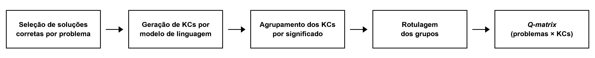
Fonte: elaborado pelos autores (2026).
- >Para cada problema, o CodeBERT converte as soluções corretas em vetores, que são agrupados; sorteia-se uma solução de cada grupo, somando cinco soluções diversas.
- >Um grande modelo de linguagem (large language model, LLM) recebe o enunciado e essas soluções e devolve os KCs do problema, cada um com uma justificativa.
- >O Sentence-BERT agrupa os KCs semelhantes da atividade, e o LLM dá um nome a cada grupo.
- >A Q-matrix liga cada problema aos seus conceitos. Ela não muda o treino: traduz as estimativas por problema em conceitos.
>o que acrescentamos
Sobre o método de Duan et al. (2026), a ferramenta troca o modelo de linguagem e acrescenta etapas para apoiar a revisão do docente:
Quadro 1 – Diferenças em relação ao método de Duan et al. (2026)
| Diferença |
|---|
Modelo de linguagem:
|
| Agrupamento dos conceitos por atividade |
| Tradução dos nomes e das justificativas para o português |
| Trecho de código de cada associação, conferido na solução |
| Revisão e aprovação do docente antes do treino |
Fonte: elaborado pelos autores (2026).
O Claude Haiku 4.5 é o modelo de linguagem acessível no ambiente em que a ferramenta roda.
>conceitos extraídos na a1
Na atividade A1, o modelo de linguagem leu 50 soluções dos 10 problemas e gerou 65 KCs, com 26 nomes distintos, agrupados em 13 conceitos e 46 associações entre problema e conceito, em 12 min 41 s.
Quadro 2 – Conceitos extraídos na atividade A1
| Conceito | Nº de problemas |
|---|---|
| Estruturas de instrução if-else | 10 |
| Operadores lógicos e condicionais | 10 |
| Comparações numéricas | 9 |
| Operações aritméticas básicas | 5 |
| Uso do tipo de dado boolean | 3 |
| Inicialização e atribuição de variável | 2 |
| Outros sete conceitos | 1 cada |
Fonte: elaborado pelos autores (2026).
Os dois conceitos presentes nos dez problemas, if-else e operadores lógicos, são coerentes com uma atividade de decisões condicionais.
>o problema love6
Para comparar, usamos o exemplo que Duan et al. (2026) apresentam no artigo, o problema 233 (love6).
Quadro 3 – Componentes de conhecimento do problema 233 (love6)
The number 6 is a truly great number. Given two int values, a and b, return true if either one is 6. Or if their sum or difference is 6. Note: the function Math.abs(num) computes the absolute value of a number.
1 2 3 4 5 6
public boolean love6(int a, int b) { if(a == 6 || b == 6 || a + b == 6 || Math.abs(a - b) == 6) return true; return false; }
| KCs escritos por humanosreferência: base CSEDM | Conceitos extraídos neste trabalhonosso resultado | KCs gerados por Duan et al. (2026)referência: artigo |
|---|---|---|
| If/Else | Estruturas de instrução if-else | If and else if statement |
| Math (+ − ∗ /) | Operações aritméticas básicas | Basic arithmetic operations |
| LogicAndNotOr | Operadores lógicos e condicionais | Logical operators |
| LogicCompare | Comparações numéricas | Numerical comparisons |
| — | Invocação de método | Absolute value computation |
Fonte: elaborado pelos autores (2026).
- >Quatro dos cinco KCs de Duan et al. (2026) têm um conceito correspondente; o quinto, o valor absoluto, aparece de forma indireta, na invocação de método.
- >Invocação de método é um nome genérico para o valor absoluto, e a justificativa do conceito menciona o uso de
Math.abs. - >Em amarelo, o conceito extraído e o trecho de código que o justifica, apontado pelo LLM.
>a ferramenta
A ferramenta é uma aplicação web que permite ao docente aplicar aos dados da própria turma o processo de mineração de dados educacionais adotado neste trabalho. Seu uso corresponde à fase de implantação desse processo.
Figura 6 – Fluxo de uso da ferramenta
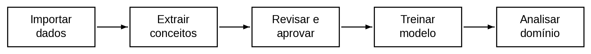
Fonte: elaborado pelos autores (2026).
Cada turma é registrada separadamente e mantém suas atividades, os conceitos aprovados e as versões dos modelos.
Duan et al. (2026, tradução própria) recomendam “que KCs gerados automaticamente sejam revisados por especialistas do domínio antes do uso em ambientes educacionais reais”. Por isso, na ferramenta, os conceitos ficam em rascunho até a aprovação do docente.
>requisitos da ferramenta
Um questionário exploratório aplicado a professores de programação apoiou o mapeamento das funcionalidades.
Quadro 4 – Funcionalidades propostas e atendimento pela ferramenta
| Nº | Funcionalidade proposta | Onde aparece na ferramenta |
|---|---|---|
| 1 | Visualização dos conceitos que cada estudante domina ou em que tem dificuldade | Abas de conceitos e de estudantes |
| 2 | Histórico detalhado de tentativas por exercício de cada estudante | Execuções, erros de compilação e tentativas por problema |
| 3 | Predição de risco de dificuldade ou reprovação | Domínio estimado baixo por problema, conceito e estudante |
| 4 | Comparação de progresso entre turmas ou semestres | Turmas registradas separadamente |
| 5 | Sugestão de intervenção pedagógica personalizada | Conceitos de menor domínio da turma e de cada estudante |
Fonte: elaborado pelos autores (2026).
As funcionalidades 1 e 2 estão implementadas. A 3, a 4 e a 5 são atendidas como apoio à análise: a ferramenta reúne a informação, e a interpretação é do docente.
>arquitetura
O código se organiza em três partes, e as tecnologias acompanham essa divisão.
Figura 7 – Visão geral da ferramenta
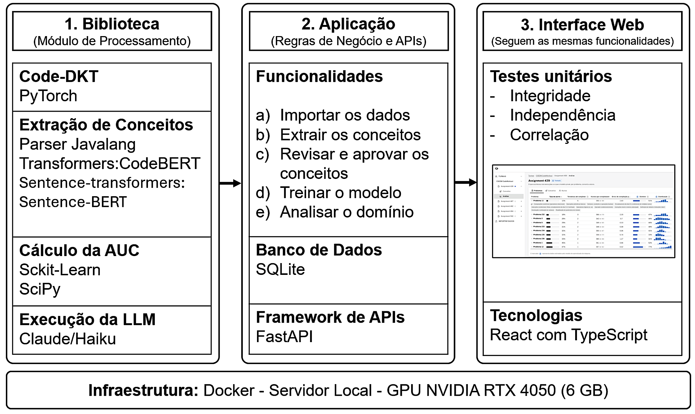
Fonte: elaborado pelos autores (2026).
As três partes contam com testes unitários, e o sistema roda em contêineres Docker.
>banco de dados
Os dados de cada etapa ficam em três grupos de tabelas. O primeiro reúne a turma e os dados importados.
Figura 8 – Tabelas da turma e dos dados importados
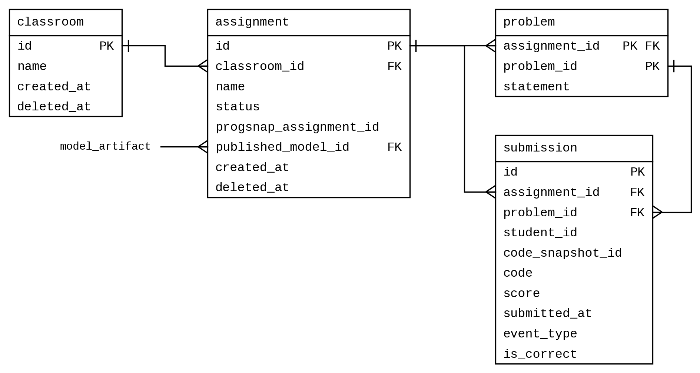
Fonte: elaborado pelos autores (2026).
As execuções dos estudantes ficam em submission, com o código, a pontuação, o horário e a indicação de acerto.
>banco de dados
O segundo grupo registra a extração dos conceitos.
Figura 9 – Tabelas da extração dos conceitos
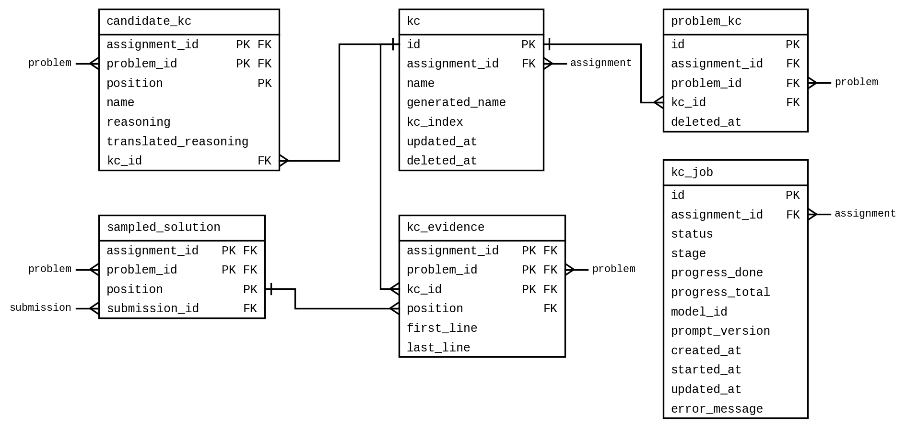
Fonte: elaborado pelos autores (2026).
problem_kc representa a Q-matrix, e kc_evidence guarda o trecho de código de cada associação.
>banco de dados
O terceiro grupo armazena os treinamentos e os modelos.
Figura 10 – Tabelas do treino dos modelos de KT
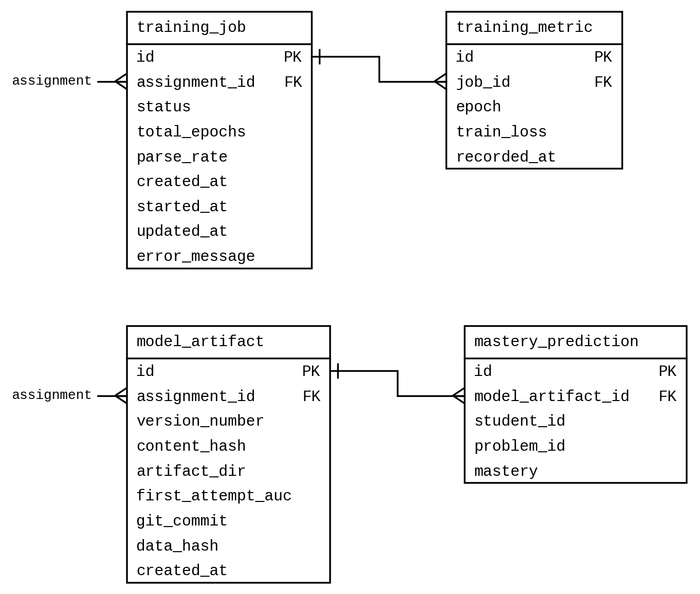
Fonte: elaborado pelos autores (2026).
Cada versão em model_artifact guarda a AUC de primeira tentativa, o commit e o hash dos dados.
>reprodutibilidade
O treino e a extração usam a GPU e precisam dar o mesmo resultado quando repetidos. Por isso, adotamos práticas de MLOps (Kreuzberger; Kühl; Hirschl, 2023):
- >Tarefas pesadas em processos separados, uma por vez, com o estado registrado no banco.
- >Cada versão de modelo ligada ao commit do código e ao hash dos dados; a extração registra o LLM e a versão do prompt.
- >Sementes fixas, versões fixadas do PyTorch e do CUDA e modelos carregados de revisões específicas.
- >Dois testes de regressão: o treino do Code-DKT na A1 com dez sementes e a extração da A1 a partir das respostas armazenadas do LLM.
>domínio por conceito
Depois do treino, o Code-DKT dá, para cada estudante, a chance de acertar cada problema da atividade, inclusive os que ele ainda não resolveu. Esse valor é o domínio estimado no problema.
O domínio em um conceito é a média do domínio nos problemas associados a ele na Q-matrix.
Figura 11 – Do domínio por problema ao domínio por conceito
Fonte: elaborado pelos autores (2026), com o domínio médio da turma na atividade A1.
Os conceitos não participam do treino: eles agrupam as estimativas em unidades que o docente interpreta.
>demonstração
Demonstração da ferramenta
Turma CSEDM CodeWorkout · atividade A1 (Assignment 439)
>demonstração
A importação confere os arquivos e o formato antes de gravar os dados.
Figura 12 – Resultado da importação da base CSEDM
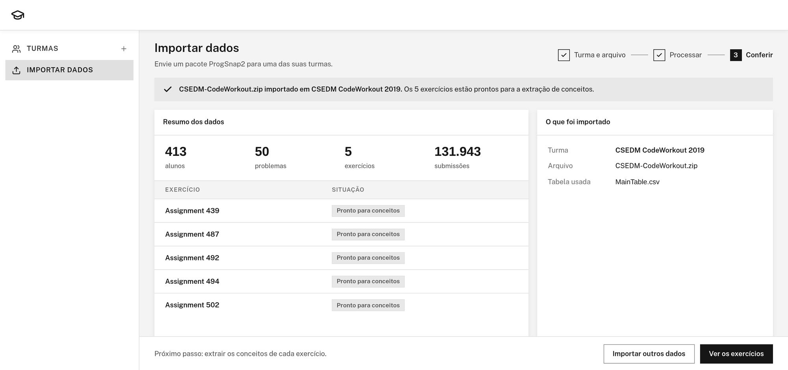
Fonte: elaborado pelos autores (2026).
Foram reconhecidos 413 estudantes, 50 problemas, 131.943 submissões e cinco atividades.
>demonstração
A tela da turma reúne as atividades importadas.
Figura 13 – Tela da turma
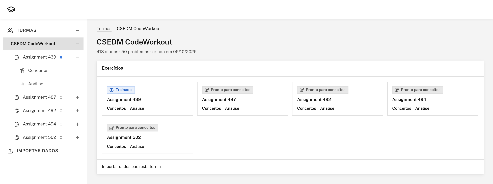
Fonte: elaborado pelos autores (2026).
A A1 (Assignment 439) já tem o modelo treinado; as demais aguardam a extração de conceitos.
>demonstração
Na tela de Conceitos, o docente revisa a Q-matrix da atividade.
Figura 14 – Conceitos extraídos da atividade A1
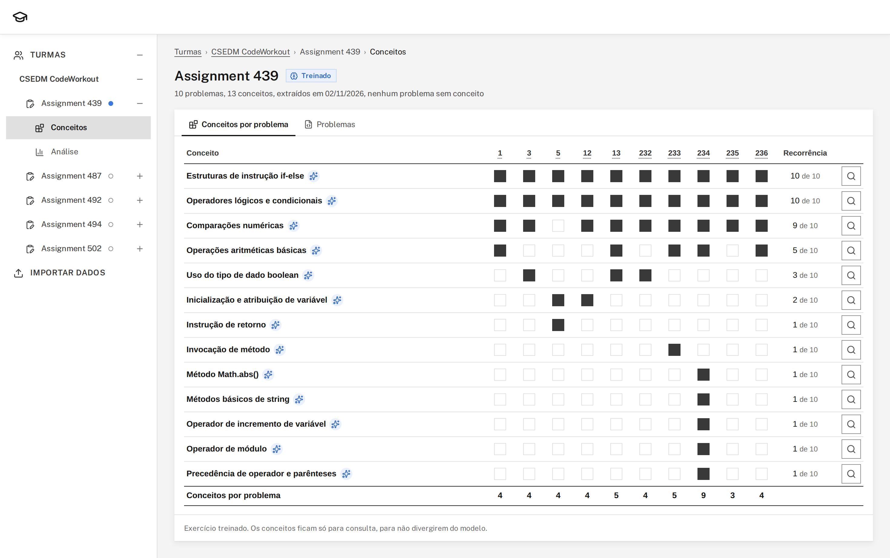
Fonte: elaborado pelos autores (2026).
São 13 conceitos nas linhas e 10 problemas nas colunas, que o docente revisa antes de aprovar a matriz.
>demonstração
Cada conceito pode ser aberto para mostrar sua origem.
Figura 15 – Origem de um conceito
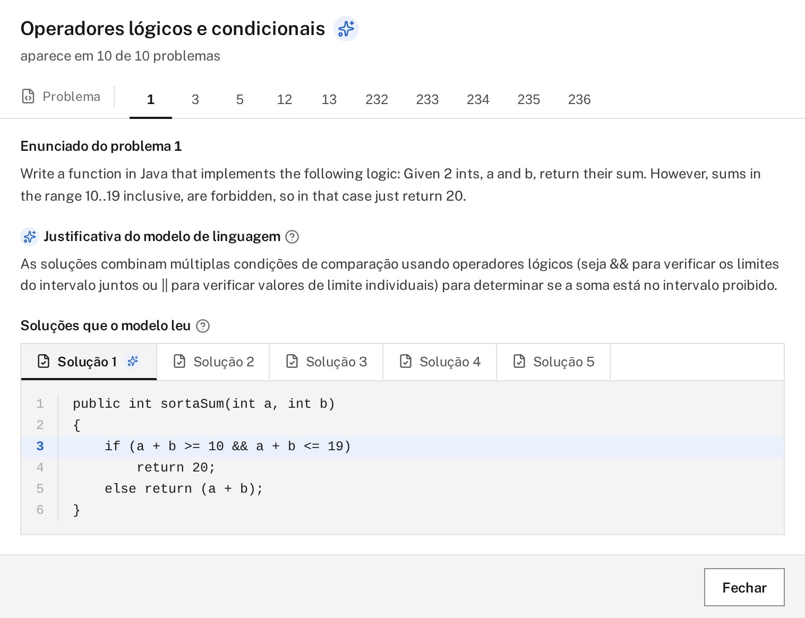
Fonte: elaborado pelos autores (2026).
A ferramenta destaca, na solução, o trecho que justifica o conceito.
>demonstração
Com os conceitos aprovados, o docente inicia o treinamento do Code-DKT.
Figura 16 – Treinamento do modelo
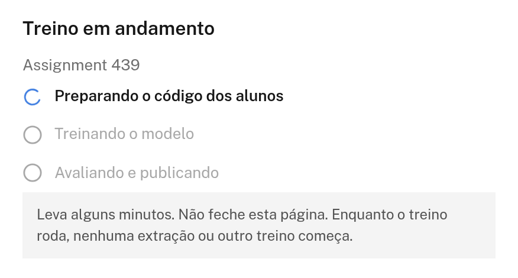
Fonte: elaborado pelos autores (2026).
O treino passa por três etapas: preparação do código, treinamento, e avaliação e publicação.
>demonstração
A aba de problemas reúne o observado nas execuções e o domínio estimado.
Figura 17 – Análise da atividade A1 por problema
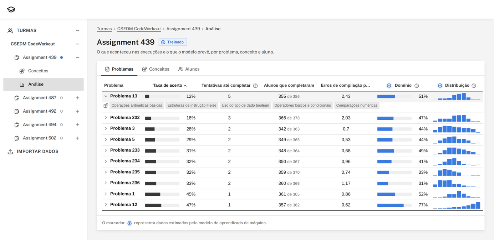
Fonte: elaborado pelos autores (2026).
O problema 13 (caughtSpeeding) tem a menor taxa de acerto, 12%, e a maior mediana de tentativas, 5.
>demonstração
A aba de conceitos coloca a taxa de acerto ao lado do domínio estimado.
Figura 18 – Análise da atividade A1 por conceito
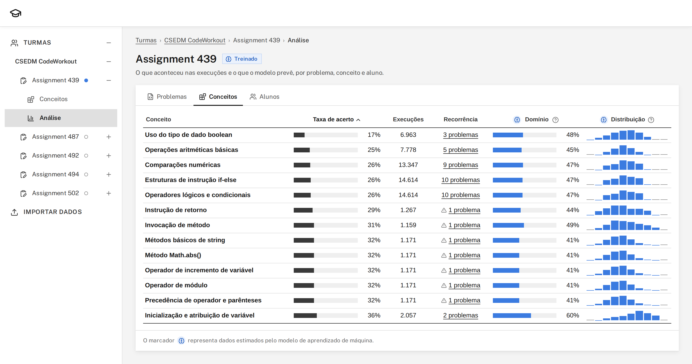
Fonte: elaborado pelos autores (2026).
É nessa aba que o docente identifica os conceitos que a turma ainda não domina.
>demonstração
A aba de alunos lista os estudantes em ordem crescente de domínio médio.
Figura 19 – Análise da atividade A1 por estudante
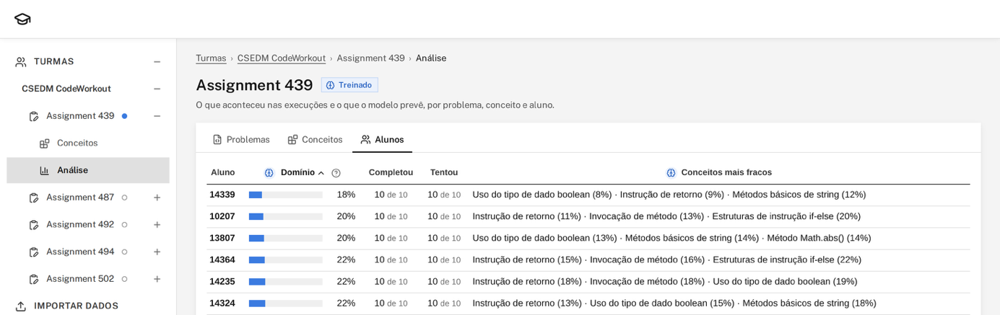
Fonte: elaborado pelos autores (2026).
Os primeiros da lista completaram os 10 problemas e, ainda assim, têm domínio baixo.
>demonstração
Ao selecionar um estudante, a ferramenta mostra seu domínio em cada conceito.
Figura 20 – Detalhe de um estudante na atividade A1
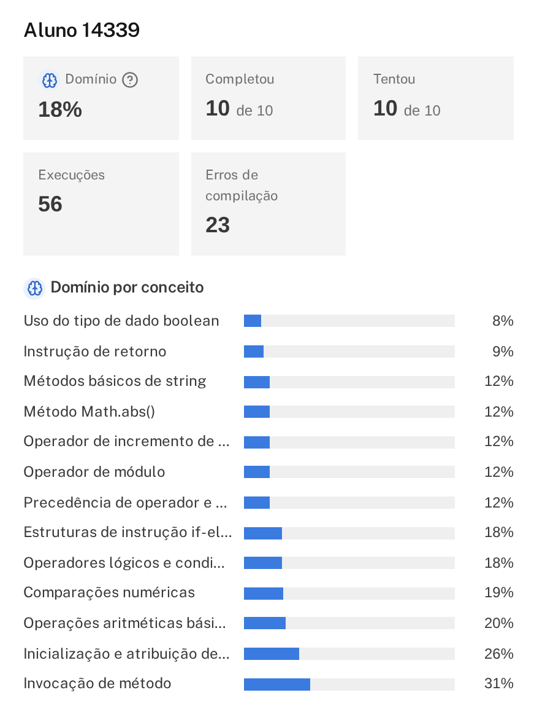
Fonte: elaborado pelos autores (2026).
O estudante 14339 completou os 10 problemas em 56 execuções, 23 com erro de compilação.
>considerações finais
- >Na base analisada, os resultados indicam que sim, as técnicas de mineração de dados educacionais permitem acompanhar a aprendizagem com mais detalhe do que acertos e erros.
- >O código melhora a previsão: o Code-DKT obteve 79,90% na primeira tentativa e 74,31% na AUC geral, contra 77,14% e 71,79% do DKT, com menor variação.
- >Os 13 conceitos da A1 têm correspondência com os KCs de Duan et al. (2026) e com os KCs escritos por humanos, e os 46 trechos de código foram encontrados nas soluções.
- >A ferramenta não foi validada por docentes em sala de aula.
- >Para trabalhos futuros, prevê-se aplicá-la a turmas brasileiras e avaliá-la junto aos docentes, após aprovação do Comitê de Ética em Pesquisa (CEP).
>obrigado